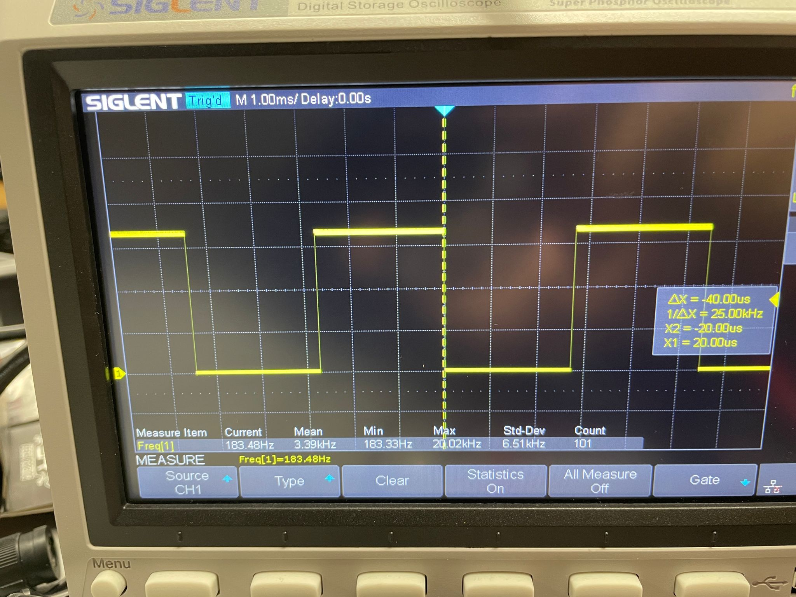
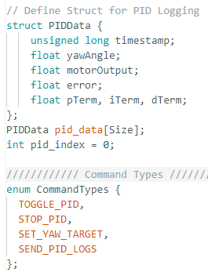

Portfolio


Hello! I'm Jorge, currently pursuing an MENG in Electrical and Computer Engineering. Apart from my academics I am heavily involved in sports(Squash & Soccer), feel free to contact me!
Lab 1 was split into two main sections, the configuration of the Artemis board and programming the connevtivity between the laptop and the Arthemis board via Bluetooth. As part of Lab 1A, we went through simple builtin examples to examine the funcationalities of the Arthemis board and finished off by programming the board to recognize the musical "C" note. In Lab 1B, after setting up the environment such as installing the right python and jupyter lab versions, a total of 8 Tasks not including the extra 5000 level task were completed step by step.
Since I used a windows laptop to complete the labs, it was relatively straight forward to setup the Arduino IDE and install the Sparkfun Apollo3 Arduino Core from the official sparkfun website by using the json file method.
Task 1 was simply connecting the Arthemis board to the laptop which was easy enough without encountering any issues after identifying and selecting the correct port and board from board manager.
In Task 2, the built-in blink example was ran and tested. The program was compiled and uploaded onto the board.
In Task 3, the example code Example4_Serial from Apollo3 was compiled and uploaded onto the board to demonstrate that the serial monitor is functional. Keep in mind the the serial monitor's baud rate had to be set to the same value as shown in the code or else it is not able to recognize the characters.

Then, the example code Example2_analogRead was uploaded to test the onboard temperature sensor. By placing a bit of pressure on the sensor, the counts would slowly increase demonstrating that the temperature was increasing. There is a shield on top of the sensor so it was not very accurate.

In Task 5, in order to test the microphone on the board, the example PDM was ran. The video shows that the values increase as the frequency of the environment sound increases as well.
The additional task for 5000 level students was to blink the LED on the board when the microphone picks up a musical "C" note. As there are many "C" notes, different ranges were set for the microphone to pick up and flash the LED. The ranges are: 1. 250 ~ 266 2. 520 ~ 530 3. 125~135 4. 60~70 5. 1040~1050

For the second part of the lab, the pre lab was mostly downloading and verifying that the correct python, pip, and jupyter lab versions are correct and compatible. The codebase was provided in the lab instructions and told how to install the ArduinoBLE library. The very first step was to identify the MAC address and generate a new UUID for the board to avoid connecting to other people's board during the designated lab session. These values were then placed in their respective placed both in the arduino program and the jupyter lab (connection.yaml)
For the first task, ECHO, the command was for the Artemis to send a string message to the laptop. A message "HiHello" was sent to the arduino and it should reply back with "Robot says -> HiHello". For the rest of this lab, arguments will be passed by triggering different cases. By using robot_cmd.get_next_value(), it is able to extract each character from the string. The results are displayed both on the serial monitor (Artemis board) and on jupyter lab (laptop).

For task 2, a new cmd needed to be created so it was first added onto the list in cmd_type and also on the arduino program. Adding a new cmd means a new case is being created. The SEND_THREE_FLOATS was quite similar to the SEND_TWO_INTS with the only difference being the data type being sent. The arduino needed to extract the float numbers being separated by "|".


Task 3 required us to add an additional cmd that would output the time by using the onboard timer function milis() then send it over bluetooth to the laptop. By appending the tx_estring_value like I did for the previous tasks.
int time;
time = millis();
tx_estring_value.clear();
tx_estring_value.append("T:");
tx_estring_value.append(time);
tx_characteristic_string.writeValue(tx_estring_value.c_str());

In continuation of task 3, In the next task a notification handler was setup in python to extract the time whenever a string characteristic is received. In order to extract the time, ble.bytearray_to_string is used to turn the byte array into a string and split it after "T:". the value after the split is stored and sent back to the computer.

In the next task, a new command was created called LOOP to send the time in a loop to observe the effective data transfer rate. Here 7 bytes were transferred per message for 5 seconds. On average there were around 35 messages per second. That means the effective transfer rate is 245 Bps


This task was to store all the time values in an array by first creating a new command, SEND_TIME_DATA. This command should fill the array until it is full and make sure it does not go beyond the array size. Then the array of time is sent to the computer and stored in a list using the notification handler. It can be seen that the list has a length of 250 which is the set size of the array. It seems like the transfer rate has increased drastially when stored in an array and sent.


Task 7 was quite similar to the previous task. This time two arrays were created, one to store the time and one for the equivalent temperature from the sensor onboard. These arrays should match in size and can be mapped to the timestamps. It can be seen that when both were sent to the compute using the notification handler both have the same size of 250.


These two methods both have advantages and disadvantages so we might need to chose either one depending on the scenario. By storing all values in an array before sending in a batch, it ensures a faster transmission speed and a higher effective transmission rate but there is a risk of the board running out of RAM. Since it only has 384kB of RAM, it is risky to be storing too many values in an array which may lead to a potential overflow. By choosing the second method to send data in real-time, it uses less RAM, therefore, elimiating the risk of causing memory overflow. There will not be much delay between collection and transmission time like the other method. However, if the data is collected too fast, the BLE might not be able to keep up which may lead to packet drops as shown in the previous tasks. There is also a higher risk of data loss since they are being sent one by one.
The results show that smaller sized bytes might have more overhead as the BLE setup time dominates transmission, and that results in a lower data rate. As the message size increases, the efficiency improves drastically, peakingat 100 bytes. This confirms that larger messages reduce overhead.

In the reliability test, it seems like all the data went through no matter the change of rate however it does become slower causing some delays.
In this lab, I learned the basics of BLE and how to use notification handlers. I was a bit confused about python and arduino and how the board transmitted and received data to the computer but by the end I understood it.
Lab 2 contains the reading, filtering, and calibrating the IMU data and signals that is connected to the Artemis nano board. This is the first piece that was connected to the board since starting the labs. After analyzing the IMU data and sending it across from the Artemis board to the laptop, I ran the stunt car for the first time and demonstrated some stunts.
For the pre-lab, we had to read about the IMU that we would be using in the lab and brush up on the knowledge taught during the lectures (Equations from the slides are going to be used later during the lab).
As part of the setup, the “SparkFun 9DOF IMU Breakout_ICM 20948_Arduino Library” was installed and the simple example was ran to understand the basics of how the accelerometer works.
A visual indication was added by blinking the LED three times during start-up to indicate that the board is running properly.
In this section, the accelerometer will be analyzed in depth by first converting the data into pitch and roll by using the equations shown in class. Jupyter labs was used to plot the graphs after the data was sent from the Artemis board. the video below demonstrates that the IMU is functional by observing the built-in serial plotter in arduino.

The data was transmitted to the computer through the serial port at this instance and not BLE but it will later be implemented. The images below demonstrate the output at {-90,0,90} degrees pitch and roll


To implement the fourier transform for the accelerometer data, the linked website in the lab script was very helpful to find the sample rate and N which ultimately led to finding the cut off frequency after analyzing the graphs. The graphs below show the noisiness of the accelerometer just with gentle taps on the table. From the FFT graph, it can be deduced that the cut-off frequency should be set at around 5Hz. This value was used to later implement the RC lowp-pass filter as taught in class.


The code above is the implementation of the low-pass filter derived from the lecture notes. The lower two graphs show the results after applying the lowpass filter. The cut-off frequency was experimented with different values but 5Hz seemed to be the most effective in removing as much noise as possible. The noise reduces drastically after the 5Hz point on both pitch and roll as expected.
In the next section, we moved to analyzing the outputs of the Gyroscope through a series of measurements and adding a complementary filter to integrate both the gyro and accelerometer values together.


The gyro values were calculated with the help of the equations mentioned in the lecture slides and the code example. The values of the pitch and roll for gyro were the wrong way due to the difference in reference axis between the gyro and accelerometer. After flipping the pitch and roll, the gyro_roll gave an inverted result when compared to the accelerometer roll, therefore, a negative sign was assigned rather than positive as shown in the example. I am not entirely sure what could have caused the inverted gyro_roll values. As shown in the graph, the raw, filtered and the gyro_pitch are compared against each other. Gyro values clearly are not the most accurate and has drift. A common observation when tweaking with the values is that the gyroscope may start deviating and end up in completely differnt end points than the accelerometer values.

The complimentary filter integrates both the accelerometer and the gyroscope values with the tuning of the alpha value. This reduces the drift from the gyroscope and filters out noise from the accelerometer data. The roll graph is a perfect example where the gyroscope values are deviated and contains drift, and the accelerometer values are quite noisy but the complimentary filter is smoother.


For this part, I created two cases, one to start gathering data and one to send the data back to the computer. The start case is not shown beceause it is just a toggle that triggers a loop within the main loop. On the left, this snippet is part of the main loop when the data for pitch, roll, and gyro values are stored in their individual arrays for better management. The code on the right shows how the arrays are being sent back to the computer. A small delay was added to prevent an overflow, which might affect the optimization of the system. After the data is received on the computer, I could see the amount of data and the time it took to transmit the data. The average time interval between each sample was 2.79ms which is equivalent to 358Hz. By increasing the size of the array to at least 1800, it would be able to store 5 seconds worth of data as shown below. By assigning a size of 2000 for each array and each of the samples being float means that the total memory needed is 2000 x 24 = 48000 bytes = 48 KB. There should be more than enough memory since the Artemis has almost 400KB of RAM. Although assigning it as float means it requires more memory but it allows for more precise values which are needed for FFT and filters. However, the timestamps were set as integers. The image below shows that it is able to store more than 7 seconds worth of data.

In this lab, I gained a lot more practice on plotting different graphs to analyze the IMU and how to use raw data and convert them into differnt values such as gyroscope, accelerometer. These were then used to evaluate the performance of the system and how to optimize it. I am still not sure about the directional differences within the gyroscope.
To complete this weeks lab, I consulted with Aidan Derocher and referred to the websites of Nila Narayan and Miguel Alvarez for some inspirations on how to complete the tasks.
In Lab 3, we had to solder 2 ToF sensors and test the accuracy so when they are built onto the RC car that can be used to tell the distance.
For the pre-lab, we had to read about the Time of Flight sendsors and take note of the I2C address because it would be used later on when dealing with 2 ToFs. We also had to think about the wiring and the placement of the compoenents that would end up going onto the RC car later on.
In this section, we cut some of the JST connectors and soldered them together with the 750mAh battery to power the Artemis nano board. Later on, the board should be fully functional without having to connect it to the computer. We had to cut the ends off, slide heat shrinks on and solder them all together. The image below shows the board connecting to Bluetooth without connecting to the computer through a USB. I was able to transmit data and display it on the computer.
After installing the SparkFun VL53L1X 4m laser distance sensor library, I was able to connec the QWIIC break-out board and start soldering the ToF sensors. Before soldering, we had to cut the QWIIC wire and match it to the corresponding pins on the ToF. The orientation is very important and I ended up making a mistake soldered the wires in the wrong direction for the two sensors. This has become a bit of an inconvenience during testing because it is harder to make sure both sensors are outputting similar values when the wires are in the way.
The first thing that was done in the section was to run the example "Example1_wire_I2C" and check whether the address matches the one we recorded during the prelab. As shown in the image below, the built-in address on the ToFs are 0x52 but it is showing 0x29. The reason behind this is because the least significant bit of the address is read/write making the built-in address 0x52. In binary, it can be seen that 0x29 has just been shifted left for the extra read/write bit.
After testing short, medium (Had to use Polulu version of VL53L1X), and long mode, I have decided to use the short mode. This is because it is the most accurate when in close proximity and that is very important for RC cars going at a high velocity. Despite being short mode it still can detect up to 1.3m in distance which should be enough for the maze track at the end of the semester. The short mode also has a big advantage over the other two, which is that it is faster, and that is crucial in tight space obstacle avoidance. The range of 1.3m was pretty accurate only deviating around 4% from the actual distance, but this depends on the angle of the ToF as it is extrememly sensitive to change in angle. The ranging time was consistently around 4ms proving its speed.
In the next section, Both ToFs were wired up to the Artemis board for testing. In order to work with two ToFs at the same time, at least one of the built-in address had to be changed. To realize this, I soldered an extra wire connecting a GPIO pin from the Artemis board to the XSHUT pin of one of the ToFs. The logic behind it is to disable one of the sensors before changing the address of the other. This way, we can assure that both ToFs have different addresses and can be ran simultaneously.

To print as fast as possible, the code should not wait for the data to be ready, therefore, I changed the code so that it would not stopRanging and from the output it can be seen that it takes roughly 8ms when there was data ready and reduced to 5ms when no data was ready. The limiting factor here is how often new ToF fata is ready because the loop does not wait for data anymore.
For the Data collection and integration with bluetooth, I used the same method as I did for the IMU. I created two cases, one for reading the data, and one for sending the data. This way it was much easier to implement into the BLE existing code. Now I can gather data and send data when needed. The two images below demonstrate that the Artemis board is able to send data to the computer via bluetooth whether it is the ToF or the IMU. There was an issue that I encountered during the integration process after sending the ToF data, it would show an error 15. This did not really affect the data collection or sending the data so I am unable to debug the issue.
Many Sensors like Time of flight sensors use infrared technology to calculate the time by keeping track of the time it takes for the infra-red to bounce back from the obstacle infront of it. This is then converted into distance. ToFs are able to work in environments with low light and can still maintain high accuracy compared to other techonologies. It is an very small and compact compared to other variations such as infra-red triangulation sensors. The limits of ToFs come when distance matters as they are limited to maximum 4m with the long mode as we tested above. Highly reflective surfaces might even affect the performance of the ToF.
In this lab, I was able to refresh my soldering skills and wiring practice which might come in handy in the future. I have also learned that ToFs have built-in addresses and have explored different methods on how to run the 2 sensors together. I had some issues where one of the ToF needed to be unplugged and plugged back in everytime I flashed the Artemis board or else it would not initialize. I thought I had bypassed the issue has it happens less but it still does once in a while. I will work on it more to make sure it does not happen during the stunt-race.
To complete this weeks lab, I consulted with Aidan Derocher and referred to the websites of Wenyi Fu for some inspirations on how to complete the tasks.
In Lab 4, we had to wire and solder 2 motor driver boards and test it using open loop control instead of controlling it with the controller.
For Pre lab, we had to plan out the circuit diagram before soldering components onto the RC car. It is important to draw the circuit diagram and know how to wire because we are going to parallel-couple inputs to draw more current without heating the board. Wire length needs to be pre measured to make sure everything fits within the chassis and easy to fix if needed.
Since we had to parallel-couple inputs, AIN1 and BIN1 were soldered together. AIN2 and BIN2 were also soldered together in a similar manner. The output pins were also wired together, AOUT1 & BOUT1 and AOUT2 & BOUT2. We had two DC motors so the same thing had to be done on the other motor driver board. I also grounded the board to the Artemis board because the oscilloscope was showing an incorrect PWM waveform. The ground and VIN on the output side were soldered onto the onbaord battery that powers the RC Car and not the Artemis board battery.
The Artemis board runs off a 750 mAh battery just by itself and the motors are powered by the 850 mAh battery. This is to avoid the possibility of occuring a transient effect where the motors draw too much current and can possibly shut the Artemis down due to the drop in voltage. By separating them, we aviod any issues that may cause the Artemis Board to shutdown due to power issues.
The images above show that 3.7V was set on the power supply before plugging in the battery to test the PWM signal coming from the motor driver board. After soldering the motor driver board onto the Artemis board to pins A2, A3, A14, and A15, I could run simple PWM signals with the command analogWrite. The image below also shows how the PWM does not work properly before the motor driver board was grounded to the Artemis board.
To wire everything onto the RC car, the board that was previously in the car had to be removed and the wired connected to the two motors and battery were soldered onto the 2 motor drive board.
With the code above, I was able to test both sides of the wheels to move forward and backward each for a few seconds. The videos below demonstrate the funcationality. The code provided is not the full code but only the section of the forward motion. The backward spin is just flipping the 0 with the "Speed" for the motor pins.
The next step was to complete all the soldering and place every component including the ToFs and IMU from the previous labs into the RC Car. The image below shows where all components are placed within the car. To fix all the components in place, I used electrical tape to bundle the wires together and used foam stickers to stick the motor driver boards near the front side of the car.
To find the lower limit of the PWM during forward motion and spinning in place, I started with 60 PWM and 150 PWM respectively. I then lowered the PWM value by 5 each time until it stopped working completly. The final values were 40 and 140 for the forward and spinning motion respectively. These were the values where the car could overcome the friction and complete the motion slowly.
At the beginning, the motors were not even in terms of output so it would deviate towards the left as shown in the first video below. After calibration, it can be seen that the car can follow the line between the tiles on the floor and end on the line after travelling 9 feet.
The code below shows how the open loop control was implemented into the artemis board to replace the controller. The video below shows the car taking 2 turns after 2 seconds of moving forward.
By measuring the output of a random pin on the artemis board that supports PWM, I programmed the pin to output a 50% duty cycle PWM and observed the frequency on the oscilloscope. As shown in the image below, at 50% duty cylce, the frequency is only at 183.48 Hz, which is relatively low for the motors to run smoothly, causing motor vibrations, and less precise speed control. By manually configuring timers, higher frequencies could be set making the motors smoother and more efficient.
To test the lowest PWM speed after overcoming the friction, I first ran the car at 40 and 140 for the forward and turn motion. In motion, the PWM would drop to its limit of 25 and 110, for forward and turning motion respectively. The following video demonstrates first the forward part then the turning motion.
This lab taught me how to solder more efficiently and think about component placements in a compact space. The programming was relatively straight forward but I found it interesting that the motors needed calibration as they were off by a lot.
To complete this weeks lab, I consulted with Aidan Derocher and referred to the websites of Nila Narayan and Mikayla Lahr for some inspirations on how to complete the tasks.
In Lab 5, we had to design and tune the PID controller for our RC Cars. This consisted of taking a few steps like linking bluetooth to start the PID, change gain values, plot data...
For Pre lab, I created 2 cases, TOGGLE_PID and SEND_PID. The toggle is just a flag that activates the PID controller section of the bluetooth code. Send PID is just logging the values into arrays before sending it across to the computer. These methods were quite similar to how I wrote the code for logging and sending IMU and ToF data.
Instead of creating a new case, I modified the pre-existing send three float and assigned the new values Kp, Ki, and Kd. To accomodate for the graph, I also changed the pid index back to the start and cleared the arrays just in case.
For the main task of the lab, I implemented the proportional componenent of the controller to find the right Kp value. Since the maximum PWM value is 255 but we need to accomodate for backtracking, the range I set was 40 ~ 166 and -166 ~ -40. It does not reach zero because below 40, the car finds it hard to move especially when backtracking. The motors will only output 0 when the error reaches 0 (Not the best solution because it is hard to hit exactly zero so I will add some tolerance after finishing the rest of the lab). For Kp, I started off with 0.5 and tesed the limits of both ends and settled on 0.2. anything below this value makes the car go very slow (the minimum speed). The proportional term measures based on the error difference between the car and the obstacle ahead.
The video below shows the car going at high speed and stopping 1ft away(~300mm)from the wall after tuning all three Kp, Ki, and Kd values. The integral component removes steady-state error by accumulating the total error. However, this causes overshoots which can be solved by the derivative part.
Integrator wind-up occurs when the error is too large for an extended period of time, which causes the integram component to grow too big. This normally causes the robot to overshoot as shown in the video below. This is the same set up as the video above showing the PID controller but without the wind-up protection.
This lab taught me how to implement and tune values for a PID controller by implementing commands through bluetooth and not having to change values manually. The programming was harder than expected especially for the extrpolation section where I was not able to complete it fully as there were timing conflicts between the estimated and raw values.
To complete this weeks lab, I consulted with Aidan Derocher and referred to the websites of Nila Narayan and Mikayla Lahr for some inspirations on how to complete the tasks.
In Lab 6,similar to lab where we had to design and implement a PID controller for the ToF sensors, this week we did the same for the IMU. The PID controller was the same but some slight changes needed to be made for example the usage of DMP.
For Pre lab, I set up the program to send and receive data through BLE. To do this, I created 4 cases, Toggle_PID, Stop_PID, Set_yaw_Target, and Send_PID_Data to control the robot while it is tetherless. The Toggle_PID starts the robot but before that, a target has to be assigned to the robot or the default value is 0. Once the robot has aligned with the target value, Send_PID_data sends all the stored values across via bluetooth to the computer for visualization purposes. Stop_PID, which is used to stop the car at anytime, was implemented incase the car gets out of control.
On the computer end, I modified the notification handler from previous labs and added a few more lists to fill when data is sent with the SEND_PID_LOGS as shown in the image above.

For the main task of the lab, I used the base from lab 5 as a starting point to implement PID into the system for the IMU. P stands proportional and it is just the error between the target and current angle of the car multiplied by a constant Kp. I stands for Integral, which is the cumulated error over time to accomodate for the steady state error produced by the propoertional term. Then there is the D term which stands for Deferential and it is the rate of change of error multiplied with constant Kd. This accomodates the overshoots caused by PI.
As shown in the video above, the car is able to find the correct angle even when influenced with external force. This was done with the implementation of PI by setting the Derivative to zero since I used the same base as lab 5. For this lab the derivative was not needed as the derivative because taking the derivative of an integrated signal essentially cancels out the effect and does nothing to the actual correction. The yaw estimates come fro mintegrating the gyroscope. To implement the derivative term a low pass filter would be needed to remove the high frequency noise produced by the gyroscope signals. I started with small values of Kp = 0.05 and ended up increasing it to 3 where it found the balance of not overshooting from each adjustment. The minimum PWM output of each motor was set to be -120 or 120 depending on the direction to ensure the small adjustments can be made when needed. For the integral I slowly increased it from 0 to 0.007 where the graph seemed to match the expected smoother curve towards the target without an overshoot and steady state error. Due to the scale, the integral part on the graph is not very obvious but it can be seen that near the end, there is a clear difference between the integral and derivative term moving slightly apart.
There are many problems that can be caused by using a gyroscope-based orientation estimation including accumulated drift, noise sensitivity, and sampling rate sensitivity. There are a few ways to accomodate for these issues like using a Digital Motion Processor(DMP). The DMP onboard the ICM-20948 oricesses raw sensor data and can provide a fused orientation estimate, which can reduce the amount of drift. Normally sensor fusion by using a Kalman filter does the trick because it combines the gyroscope readings with the accelometer and magnetometer to correct the drift. The IMU is very sensitive and has a bias that can make it report false readings even though it is stationary, causing accumulated orientation drift over time. The limitatinos of the IMU is that it hsa a configurable range of 250, 500, 1000, and 2000 degree/s. This is important because if the robot rotates faster than the range it could lead to incorrect PID values. For this lab, I implemented the DMP by using the example shown in the installed library. To start with, the #define ICM_20948_USE_DMP had to be uncommented from the header file in the util folder.
Integrator wind-up occurs when the error is too large for an extended period of time, which causes the integram component to grow too big. This normally causes the robot to overshoot as shown in the video below. This is the same set up as the video above showing the PID controller but without the wind-up protection.
This lab taught me how to implement and tune values for a PID controller by implementing commands through bluetooth and not having to change values manually. The programming was harder than expected especially for the extrpolation section where I was not able to complete it fully as there were timing conflicts between the estimated and raw values.
To complete this weeks lab, I consulted with Aidan Derocher and referred to the websites of Nila Narayan and Mikayla Lahr for some inspirations on how to complete the tasks.